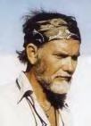

Tribute to Sam Peckinpah

[Yahoo!] [IMDB] [Wikipedia]
Movies Directed
| 1983: The Osterman Weekend 1978: Convoy 1977: Cross of Iron 1975: The Killer Elite 1974: Bring Me The Head of Alfredo Garcia 1973: Pat Garret and Billy The Kid 1972: The Getaway |
1972: Junior Bonner 1971: Straw Dogs 1970: The Ballad of Cable Hogue 1969: The Wild Bunch 1965: Major Dundee 1962: Ride The High Country 1961: The Deadly Companions |
From the Book: "If They Move....Kill'em"
The Life and Times of Sam Peckinpah
By David Weddle (1994)
EMI had bought the
screen rights to a cornball country-western song "Convoy" by C.W.
McCall. It's lyrics told the story of a convoy of semi trucks thats
blasts past fifty-five mph limit and an armada of police carsn that try
to enforce it. B.W.L Norton wrote a script to go with the song's lyrics
and jammed it full of moronic slapstick. The characters had as much
dimension as Saturday-morning cartoons and action came fast and furiouse
Peckinpah read the Convoy script through a fog of coke and booze. The similary imbelic Smokey and the Bandit had grossed $61 million just a year earlier. Here was a chance to make a box-office smash that would put him right back on top again. Sam signed for $350, 000 plus a $2000-a-week per diem snd 10 percent of the gross after the picture broke even.
Those close to Peckinpah were dismayed by his decision, but he didn't feel he the luxury of turning down the picture. With hundreds of thousands of dollars tied up in real estate and art investments and Latingo Production's pension fund, and the rest of his earnings hemorraged away on Porches, yachats, oceanfront apartmentsm hotel suites, booze, and coke, he was having cash-flow problems. "At that point in time Sam would have taken almost anything" says Kathy Haber. "He didn't have any other offers".
Peckinpah had agreed to make a comic-book movie, but as he began going over the script during pre-production he decided he couldn't leaver it at that. This was going to be Sam Peckinpah film, and he felt compelled to turn it into something more substantial. Brain bobbing in a sea chemicals, he was incapable of rewriting the script himself, so nothing happened until the cast and crew converged in Albaquerque, New Mexico, in late April. When shooting began, threw the script aside and encouraged his actors-Kris Kristofferson, Ali McGraw, and Ernest Borgnine-to rewrite and even adlib their own dialogue. But the characters that they had to work with were flimsy carboard facades and the scenes phony and contrived. The actors floundered. Simple, straightforward scenes in the script turned into amorphous, convulted, and often incomprehensible improvisationtions on the set.
Out on the highway, the chase and stunt sequences with the hundred-truck convoy were filmed with five cameras. Peckinpah riding with a camera in a helicopter high above the action, attempted to coordinate the movement of the vehicles below via radio. But the logistics overwhelmed him. Stoned out of his mind, he contradicted himself constantly. The coke-fed paranoia so overwhelmed him that he spent more and more time hiding in his trailer. The entire cast and crew, the trucks with all their teamster drivers, and the extras would stand around for hours in the hot sun waiting for Peckinpah to emerge and give order to roll the cameras. Finally they got tired of waiting.
"Sam has bought James Coburn onto the picture as a second unit director", says Kathy Haber, "because Jimmy wanted to get his DGA card. Jimmy end up directing scenes with the principal actors; so did Walter Kelley, and so did I. We had to because Sam was dropping the ball.
One by one the hardended veterans of Peckinpah's Bunch, who had fought the battles with him on picture after picture, began to desert the sinking ship: assisant Newt Arnold, stuntman Whitey Huges, script supervisor Frank Kowalski-and finally Kathy Haber. (There is a detailed story of a an ugly falling out between Sam Peckinpah and Kathy Haber, contained in this section of the book. To protect and not remind anyone with knowledge of this I will skip it).
"I never spoke to him again after that", says Haber. Convoy's Executive Producer Michael Deeley, offered Haber a job in EMI's Los Angeles office, and she took it. Whenever Peckinpah came there during post production, she left the building to make certain she'd never have to see him.
"She's gone over to the other side!" Peckinpah would growl whenever Katy's name camp up in the years that followed.
"I knew that I had to cut the umbilical cord", says Haber. "I had to. If I was to see him or talk to him I would fall back into it and I I'd be lost.
Convoy finally wrapped on September 27, 1977. Garth Craven, who was editing the film with Tony Lawson, was on the set that day. At one point Peckinpah stepped up beside him, stared off into space, and said "I haven't done one good days work on this picture-not one day that I really felt Id put it all together."
He had shot over 800,000 feet of film-almost half a million feet more than he'd exposed on The Wild Bunch. The picture finished eleven days behind schedule at a cost of $11 million-more than $5 million over budget. And they hadn't even started post production.
Peckinpah returned to L.A. and set bup editing rooms with Lawson and Craven in a small suite of offices just off Pacific Coast Highway in Malibu. Post-Production lurched along in the same haphazard manner that shooting had.Peckinpah's contract gave him three months to deliver his director's cut for two public previews; EMI allowed him five, but by March 1978 the film was still nowhere near a final cut. It still ran three and a half hours long and had no musical score other than the three-minute title song. Convoy was slated for release at the end of June; if the picture had any chance at all of making it's money back it would be in the summer, when audiences flocked by the millions to see action pictures and comedies.EMI had no trouble deciding what to do. It could remove Sam and still market Convoy with his name prominently featured in advertisements and promotional copy.
For the first time in his career, Sam Peckinpah let a studio take a film away from him without putting up a fight. When a Los Angeles Times Reporter heard that he'd been fired and called him for a quote, Sam refused to take the call.
EMI's 110-minite version (actually it's 106 min) of Convoy went into mass release at the end of June 1978. Amidst the rubble of final product it was possible, if one looked hard enough, to spot the glittering fragments of a once great talen; the old poety still sang forth here and there in the images of the big rigs thundering across the vast expanse of the American West.
But only briefly. Throughout much of the movie Peckinpah was too willing to steal from his earlier work, regurgitating old themes, sequences, set pieces, and dialogue in a vain attempt to raise a pulse in the stillborn movie.
Convoy was greeted by overwhelmingly negative reviews. Many major critics no longer even bothered with Peckinpah; the picture recieved its licks on the back pages, the whip snapped by the second-string critics who reviewed most of the summer's other throwaway exploitation movies.
The final irony of Convoy debacle was it turned out to be Peckinpah's highest grossing picture, the biggest box office hit of his career. It did outstanding businessalong the drive-in curcuit in the Midwest and South, and in Europe and Japan, grossing $46.5 million world wide ($35 million of that came from overseas markets). As had been done with The Getaway, Convoy was pre-sold to foreign exhibitors on the strength of its "concept" and the name Peckinpah, Kristofferson, and MacGraw. The picture turned a profit for EMI before it ever played in nthe theater.
Unfortunately, Convoy's financial success was not enough to save Sam Peckinpah's career. The picture's final negative cost was $12 million, more than double its original budget. For all over its over blown glamour, Hollywood is a small town where gossip travels fast. Those who returned from the Convoy location quickly spread the word of Peckinpah's white-powder madness. Few studios or independent producers were interested in putting in another multi-million dollar picture in the hands of an addict.
For the first time in nine years, Sam Peckinpah finished a picture and found himself with another to grab on to.
Peckinpah read the Convoy script through a fog of coke and booze. The similary imbelic Smokey and the Bandit had grossed $61 million just a year earlier. Here was a chance to make a box-office smash that would put him right back on top again. Sam signed for $350, 000 plus a $2000-a-week per diem snd 10 percent of the gross after the picture broke even.
Those close to Peckinpah were dismayed by his decision, but he didn't feel he the luxury of turning down the picture. With hundreds of thousands of dollars tied up in real estate and art investments and Latingo Production's pension fund, and the rest of his earnings hemorraged away on Porches, yachats, oceanfront apartmentsm hotel suites, booze, and coke, he was having cash-flow problems. "At that point in time Sam would have taken almost anything" says Kathy Haber. "He didn't have any other offers".
Peckinpah had agreed to make a comic-book movie, but as he began going over the script during pre-production he decided he couldn't leaver it at that. This was going to be Sam Peckinpah film, and he felt compelled to turn it into something more substantial. Brain bobbing in a sea chemicals, he was incapable of rewriting the script himself, so nothing happened until the cast and crew converged in Albaquerque, New Mexico, in late April. When shooting began, threw the script aside and encouraged his actors-Kris Kristofferson, Ali McGraw, and Ernest Borgnine-to rewrite and even adlib their own dialogue. But the characters that they had to work with were flimsy carboard facades and the scenes phony and contrived. The actors floundered. Simple, straightforward scenes in the script turned into amorphous, convulted, and often incomprehensible improvisationtions on the set.
Out on the highway, the chase and stunt sequences with the hundred-truck convoy were filmed with five cameras. Peckinpah riding with a camera in a helicopter high above the action, attempted to coordinate the movement of the vehicles below via radio. But the logistics overwhelmed him. Stoned out of his mind, he contradicted himself constantly. The coke-fed paranoia so overwhelmed him that he spent more and more time hiding in his trailer. The entire cast and crew, the trucks with all their teamster drivers, and the extras would stand around for hours in the hot sun waiting for Peckinpah to emerge and give order to roll the cameras. Finally they got tired of waiting.
"Sam has bought James Coburn onto the picture as a second unit director", says Kathy Haber, "because Jimmy wanted to get his DGA card. Jimmy end up directing scenes with the principal actors; so did Walter Kelley, and so did I. We had to because Sam was dropping the ball.
One by one the hardended veterans of Peckinpah's Bunch, who had fought the battles with him on picture after picture, began to desert the sinking ship: assisant Newt Arnold, stuntman Whitey Huges, script supervisor Frank Kowalski-and finally Kathy Haber. (There is a detailed story of a an ugly falling out between Sam Peckinpah and Kathy Haber, contained in this section of the book. To protect and not remind anyone with knowledge of this I will skip it).
"I never spoke to him again after that", says Haber. Convoy's Executive Producer Michael Deeley, offered Haber a job in EMI's Los Angeles office, and she took it. Whenever Peckinpah came there during post production, she left the building to make certain she'd never have to see him.
"She's gone over to the other side!" Peckinpah would growl whenever Katy's name camp up in the years that followed.
"I knew that I had to cut the umbilical cord", says Haber. "I had to. If I was to see him or talk to him I would fall back into it and I I'd be lost.
Convoy finally wrapped on September 27, 1977. Garth Craven, who was editing the film with Tony Lawson, was on the set that day. At one point Peckinpah stepped up beside him, stared off into space, and said "I haven't done one good days work on this picture-not one day that I really felt Id put it all together."
He had shot over 800,000 feet of film-almost half a million feet more than he'd exposed on The Wild Bunch. The picture finished eleven days behind schedule at a cost of $11 million-more than $5 million over budget. And they hadn't even started post production.
Peckinpah returned to L.A. and set bup editing rooms with Lawson and Craven in a small suite of offices just off Pacific Coast Highway in Malibu. Post-Production lurched along in the same haphazard manner that shooting had.Peckinpah's contract gave him three months to deliver his director's cut for two public previews; EMI allowed him five, but by March 1978 the film was still nowhere near a final cut. It still ran three and a half hours long and had no musical score other than the three-minute title song. Convoy was slated for release at the end of June; if the picture had any chance at all of making it's money back it would be in the summer, when audiences flocked by the millions to see action pictures and comedies.EMI had no trouble deciding what to do. It could remove Sam and still market Convoy with his name prominently featured in advertisements and promotional copy.
For the first time in his career, Sam Peckinpah let a studio take a film away from him without putting up a fight. When a Los Angeles Times Reporter heard that he'd been fired and called him for a quote, Sam refused to take the call.
EMI's 110-minite version (actually it's 106 min) of Convoy went into mass release at the end of June 1978. Amidst the rubble of final product it was possible, if one looked hard enough, to spot the glittering fragments of a once great talen; the old poety still sang forth here and there in the images of the big rigs thundering across the vast expanse of the American West.
But only briefly. Throughout much of the movie Peckinpah was too willing to steal from his earlier work, regurgitating old themes, sequences, set pieces, and dialogue in a vain attempt to raise a pulse in the stillborn movie.
Convoy was greeted by overwhelmingly negative reviews. Many major critics no longer even bothered with Peckinpah; the picture recieved its licks on the back pages, the whip snapped by the second-string critics who reviewed most of the summer's other throwaway exploitation movies.
The final irony of Convoy debacle was it turned out to be Peckinpah's highest grossing picture, the biggest box office hit of his career. It did outstanding businessalong the drive-in curcuit in the Midwest and South, and in Europe and Japan, grossing $46.5 million world wide ($35 million of that came from overseas markets). As had been done with The Getaway, Convoy was pre-sold to foreign exhibitors on the strength of its "concept" and the name Peckinpah, Kristofferson, and MacGraw. The picture turned a profit for EMI before it ever played in nthe theater.
Unfortunately, Convoy's financial success was not enough to save Sam Peckinpah's career. The picture's final negative cost was $12 million, more than double its original budget. For all over its over blown glamour, Hollywood is a small town where gossip travels fast. Those who returned from the Convoy location quickly spread the word of Peckinpah's white-powder madness. Few studios or independent producers were interested in putting in another multi-million dollar picture in the hands of an addict.
For the first time in nine years, Sam Peckinpah finished a picture and found himself with another to grab on to.